<!DOCTYPE lake>
<h1 data-lake-id="EOlLi" id="EOlLi"><span data-lake-id="u8a67d54e" id="u8a67d54e">1&gt; 数组的内存布局</span></h1><h2 data-lake-id="xVnr5" id="xVnr5"><span data-lake-id="u6d5148a0" id="u6d5148a0">1.1&gt; 代码验证</span></h2><span class="yuque-card-unsupported">[codeblock]</span><hr/><h2 data-lake-id="O2b0x" id="O2b0x"><span data-lake-id="u98476e2e" id="u98476e2e">1.2&gt; 运行结果</span></h2><p data-lake-id="u81652d28" id="u81652d28">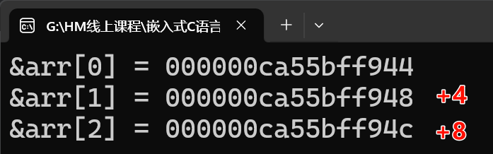</p><p data-lake-id="u8547b0d5" id="u8547b0d5">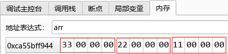</p><hr/><h2 data-lake-id="bpYF9" id="bpYF9"><span data-lake-id="ue787670f" id="ue787670f">1.3&gt; 内存布局</span></h2><p data-lake-id="u8ddc1708" id="u8ddc1708">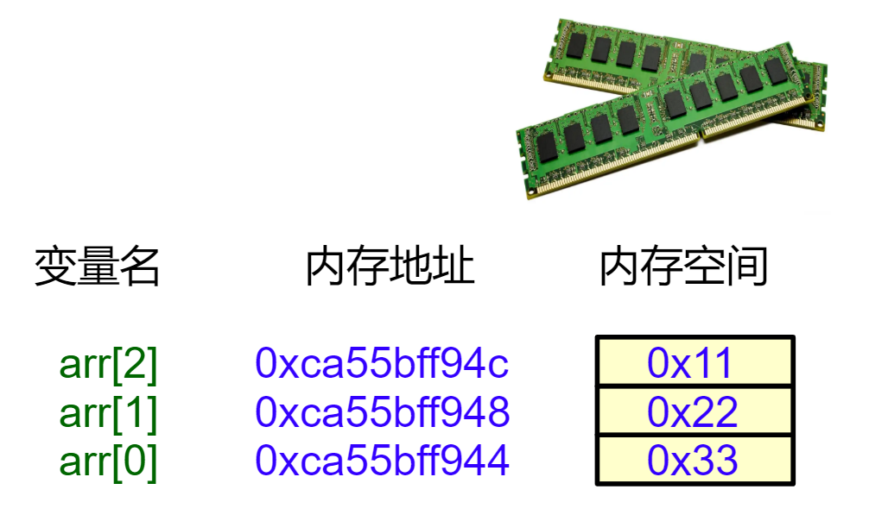</p><p data-lake-id="u89c1fa7e" id="u89c1fa7e"><span data-lake-id="u8025a5f4" id="u8025a5f4">✅</span><span class="lake-fontsize-14" data-lake-id="u3d941bfa" id="u3d941bfa">数组元素在内存中是按顺序存储的。</span></p><hr/><h2 data-lake-id="wLchz" id="wLchz"><span data-lake-id="u3255e5e7" id="u3255e5e7">🐻</span><span data-lake-id="u21384716" id="u21384716">实践练习：</span></h2><p data-lake-id="ud4552548" id="ud4552548"><span class="lake-fontsize-14" data-lake-id="ub4bd5b3f" id="ub4bd5b3f">编写程序，定义char或double类型的数组，画出数组的内存布局示意图。</span></p><hr/><h1 data-lake-id="tA5RA" id="tA5RA"><span class="lake-fontsize-14" data-lake-id="u7a6b8847" id="u7a6b8847">2&gt; 数组名的特殊性质</span></h1><h2 data-lake-id="hpGdf" id="hpGdf"><span data-lake-id="u33f185d2" id="u33f185d2">2.1&gt; 数组名是首元素的地址</span></h2><h3 data-lake-id="jkZog" id="jkZog"><span data-lake-id="uc9d150f4" id="uc9d150f4">2.1.1&gt; 代码验证</span></h3><span class="yuque-card-unsupported">[codeblock]</span><h3 data-lake-id="wOvvo" id="wOvvo"><span data-lake-id="ufcfcb92a" id="ufcfcb92a">2.1.2&gt; 运行结果</span></h3><p data-lake-id="ud27e0ccf" id="ud27e0ccf">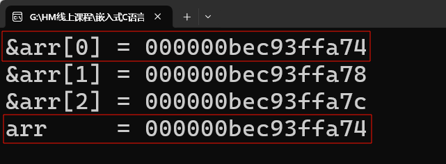</p><h3 data-lake-id="tx1OV" id="tx1OV"><span data-lake-id="uf9fce956" id="uf9fce956">2.1.3&gt; 内存布局</span></h3><p data-lake-id="ue7a655ed" id="ue7a655ed">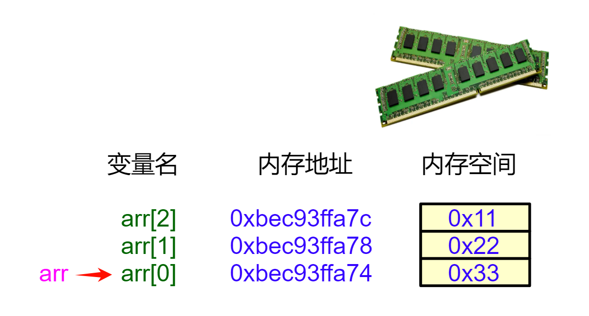</p><p data-lake-id="u07232d1f" id="u07232d1f"><span data-lake-id="u0a31397d" id="u0a31397d">✅</span><span class="lake-fontsize-12" data-lake-id="ud85d3f05" id="ud85d3f05" style="color: #000000">数组名 arr 代表数组首元素的地址（等价于 &amp;arr[0]）；</span></p><p data-lake-id="ub9171766" id="ub9171766"><span class="lake-fontsize-12" data-lake-id="u2731832f" id="u2731832f" style="color: #000000">    就像『大芬村』这个村名，既代表整个村子，也默认指向村口第一户人家</span></p><span class="yuque-card-unsupported">[codeblock]</span><hr/><h2 data-lake-id="M67Mi" id="M67Mi"><span data-lake-id="ucea139e1" id="ucea139e1">2.2&gt; 数组名的算术运算</span></h2><p data-lake-id="u23029f43" id="u23029f43"><span class="lake-fontsize-12" data-lake-id="ue8107bb7" id="ue8107bb7">数组名既然是数组首元素的地址，那么他+1是什么结果呢？</span></p><h3 data-lake-id="Lvw1U" id="Lvw1U"><span data-lake-id="u4573c3bf" id="u4573c3bf">2.2.1&gt; 代码验证</span></h3><span class="yuque-card-unsupported">[codeblock]</span><h3 data-lake-id="qBt2T" id="qBt2T"><span data-lake-id="ue6d6fcec" id="ue6d6fcec">2.2.2&gt; 运行结果</span></h3><p data-lake-id="u720692a7" id="u720692a7">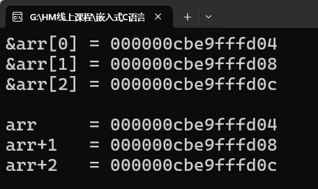</p><h3 data-lake-id="ffHhc" id="ffHhc"><span data-lake-id="u402f7462" id="u402f7462">2.2.3&gt; 内存布局</span></h3><p data-lake-id="u20a95eb5" id="u20a95eb5">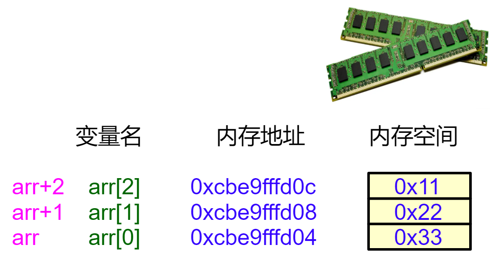</p><p data-lake-id="u6a38b28c" id="u6a38b28c"><span data-lake-id="u224f68f4" id="u224f68f4">🚀</span><span data-lake-id="ucd65cad0" id="ucd65cad0">arr + n 等价于 &amp;arr[n]，  数组名+1，就到下个元素的地址。</span></p><hr/><h2 data-lake-id="wh5LO" id="wh5LO"><span data-lake-id="u9768ca84" id="u9768ca84">2.3&gt; 数组名的解引用</span></h2><p data-lake-id="uf953c458" id="uf953c458"><span class="lake-fontsize-12" data-lake-id="ue76b465e" id="ue76b465e">通过数组名的算术运算可以得到每个元素的地址，有了地址，你要马上想到"快递员"</span><code data-lake-id="ue82b1a2b" id="ue82b1a2b"><strong><span class="lake-fontsize-12" data-lake-id="uc0f93b69" id="uc0f93b69" style="color: #DF2A3F">*</span></strong></code><span class="lake-fontsize-12" data-lake-id="u5a24ee0d" id="u5a24ee0d">解引用运算符；</span></p><h3 data-lake-id="xqLj1" id="xqLj1"><span data-lake-id="ud020699e" id="ud020699e">2.3.1&gt; 代码验证</span></h3><span class="yuque-card-unsupported">[codeblock]</span><h3 data-lake-id="VG4kJ" id="VG4kJ"><span data-lake-id="ud74e8235" id="ud74e8235">2.3.2&gt; 运行结果</span></h3><p data-lake-id="u042fd3be" id="u042fd3be">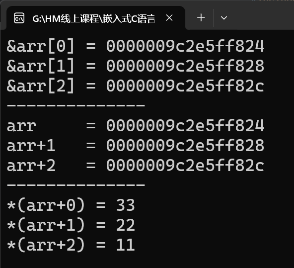</p><h3 data-lake-id="Cwu59" id="Cwu59"><span data-lake-id="u14cdc84f" id="u14cdc84f">2.3.3&gt; 内存布局</span></h3><p data-lake-id="uaf0f854f" id="uaf0f854f">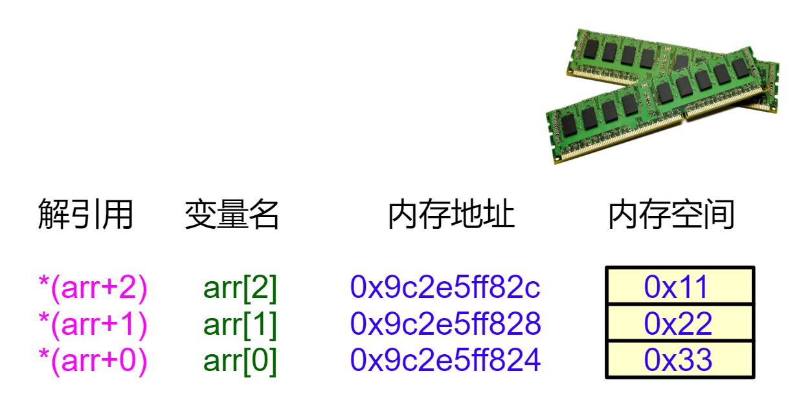</p><p data-lake-id="ub94b5ab9" id="ub94b5ab9"><span data-lake-id="u7eb3d1ef" id="u7eb3d1ef">🏇🚴</span><span data-lake-id="u64e64238" id="u64e64238">呦呵！我们可以通过2中方式，访问数组元素的值：</span></p><p data-lake-id="u07cd9cf5" id="u07cd9cf5"><span data-lake-id="u4e621fe1" id="u4e621fe1">方式1：下标方式，如arr[0], arr[1];</span></p><p data-lake-id="u3f593563" id="u3f593563"><span data-lake-id="u243c99e2" id="u243c99e2">方式2：指针方式，*(arr+0), *(arr+1);</span></p><p data-lake-id="ubf1ca08a" id="ubf1ca08a"><span data-lake-id="u69efa896" id="u69efa896">其实：</span><code data-lake-id="uc0de749c" id="uc0de749c"><span data-lake-id="u8a267e11" id="u8a267e11">arr[n]</span></code><span data-lake-id="u90ba8cde" id="u90ba8cde"> 本质是 </span><code data-lake-id="ud475ce6b" id="ud475ce6b"><span data-lake-id="ubceb2335" id="ubceb2335">*(arr + n)</span></code><span data-lake-id="ucbd8c131" id="ucbd8c131">的语法糖</span><span data-lake-id="u930beae6" id="u930beae6" style="color: rgb(248, 250, 255)">🍬</span><span data-lake-id="ue85b5ef5" id="ue85b5ef5">！</span></p><hr/><p data-lake-id="u1a27debd" id="u1a27debd"><span data-lake-id="u0b308941" id="u0b308941">🤔</span><span data-lake-id="ud9a3b1f5" id="ud9a3b1f5"> 为什么数组下标从0开始？</span></p><p data-lake-id="ufb7b98f1" id="ufb7b98f1"><span data-lake-id="u3a32f57d" id="u3a32f57d">根本原因：因为数组首元素 </span><code data-lake-id="u977c275c" id="u977c275c"><span data-lake-id="u37348932" id="u37348932">arr[0]</span></code><span data-lake-id="u54a9c829" id="u54a9c829">的地址，相对</span><code data-lake-id="u2747234c" id="u2747234c"><span data-lake-id="u6bf6e0a5" id="u6bf6e0a5">arr</span></code><span data-lake-id="uda66c4b5" id="uda66c4b5">的偏移量是</span><span data-lake-id="u886056dd" id="u886056dd" style="color: #DF2A3F">0</span><span data-lake-id="ucf72682f" id="ucf72682f">！计算机这样设计最自然：</span></p><span class="yuque-card-unsupported">[codeblock]</span><hr/><h2 data-lake-id="mCrbB" id="mCrbB"><span data-lake-id="u84da09b7" id="u84da09b7">🐻</span><span data-lake-id="u39802b8b" id="u39802b8b">实践练习：</span></h2><p data-lake-id="u4f20721a" id="u4f20721a"><span data-lake-id="u25452f59" id="u25452f59">编写程序，定义char或double类型的数组，</span></p><p data-lake-id="u8c9f4205" id="u8c9f4205"><span data-lake-id="u0455eb06" id="u0455eb06">1-验证数组名是首元素的地址；</span></p><p data-lake-id="u415d8b0c" id="u415d8b0c"><span data-lake-id="uce1d939a" id="uce1d939a">2-通过数组名解引用的方式打印数组元素值；</span></p><hr/><h1 data-lake-id="zwW0a" id="zwW0a"><span data-lake-id="u962cba15" id="u962cba15">3&gt; 指针访问数组</span></h1><h2 data-lake-id="RbFCy" id="RbFCy"><span data-lake-id="u208a11ba" id="u208a11ba">3.1&gt; 指针指向数组首元素地址</span></h2><p data-lake-id="u087700f7" id="u087700f7"><span data-lake-id="ue519a51b" id="ue519a51b">数组名是数组首元素的地址，将指针变量指向数组的首元素地址，开始对数组的访问。</span></p><h3 data-lake-id="t93dO" id="t93dO"><span data-lake-id="ub13f694b" id="ub13f694b">3.1.1&gt; 代码验证</span></h3><span class="yuque-card-unsupported">[codeblock]</span><h3 data-lake-id="Zq572" id="Zq572"><span data-lake-id="u2f5e8a21" id="u2f5e8a21">3.1.2&gt; 运行结果</span></h3><p data-lake-id="u820948e5" id="u820948e5">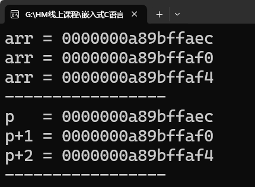</p><h3 data-lake-id="v6BGp" id="v6BGp"><span data-lake-id="u33e9f2bc" id="u33e9f2bc">3.1.3&gt; 内存布局</span></h3><p data-lake-id="u7f9976c0" id="u7f9976c0">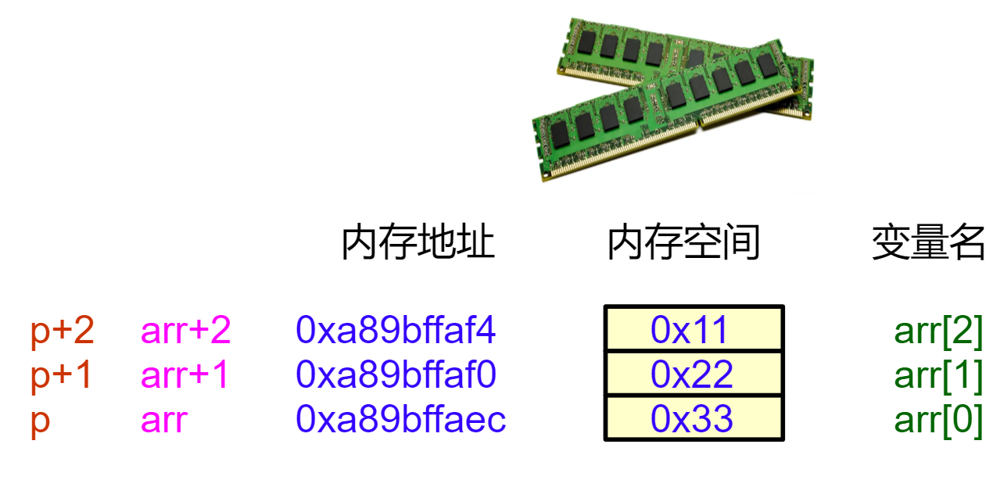</p><p data-lake-id="u99abbbad" id="u99abbbad"><span data-lake-id="u7f4d4743" id="u7f4d4743">🚀</span><span data-lake-id="u8236df90" id="u8236df90"> </span><code data-lake-id="u3ea6ce0f" id="u3ea6ce0f"><span data-lake-id="u2ca75fca" id="u2ca75fca">arr+2</span></code><span data-lake-id="uc89f1247" id="uc89f1247"> 的值等于</span><code data-lake-id="u83e0768e" id="u83e0768e"><span data-lake-id="u3ce70d0e" id="u3ce70d0e">p+2</span></code><span data-lake-id="u2cb2513a" id="u2cb2513a">的值，数组也与指针成功对接了！</span></p><hr/><h2 data-lake-id="s7t8Q" id="s7t8Q"><span data-lake-id="u365871c8" id="u365871c8">3.2&gt; 指针解引用访问数组元素</span></h2><p data-lake-id="u7d3adc8b" id="u7d3adc8b"><span data-lake-id="u625c8e5e" id="u625c8e5e">通过解引用指针（使用*操作符），我们可以访问指针当前指向的数组元素的值。</span></p><h3 data-lake-id="PIFnU" id="PIFnU"><span data-lake-id="u553b49d5" id="u553b49d5">3.2.1&gt; 代码验证</span></h3><span class="yuque-card-unsupported">[codeblock]</span><hr/><h3 data-lake-id="pylYc" id="pylYc"><span data-lake-id="ud0051803" id="ud0051803">3.2.2&gt; 运行结果</span></h3><p data-lake-id="u4b96d2f2" id="u4b96d2f2">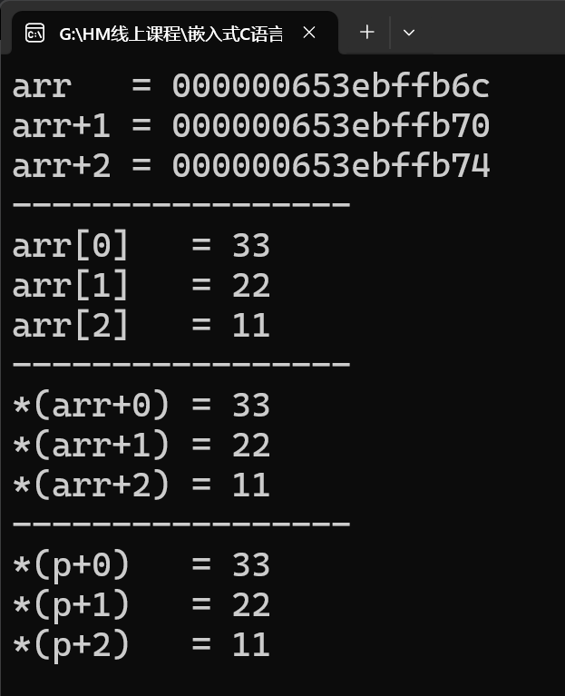</p><hr/><h3 data-lake-id="vu7PF" id="vu7PF"><span data-lake-id="uec51fa55" id="uec51fa55">3.3.3&gt; 内存布局</span></h3><p data-lake-id="u9ce2fc24" id="u9ce2fc24">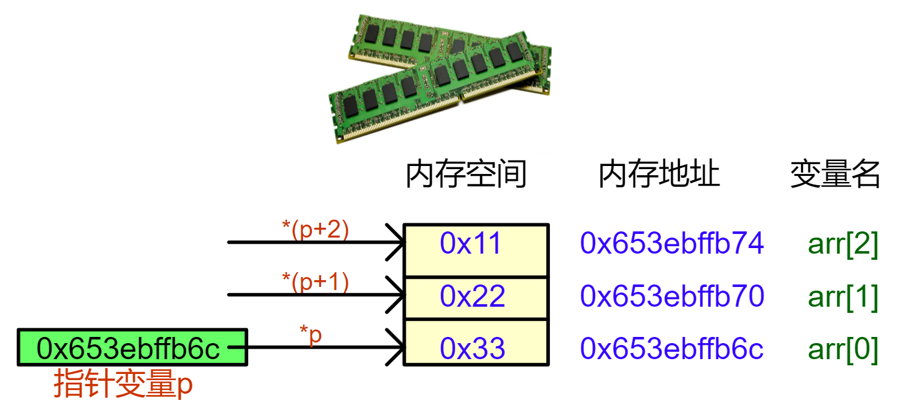</p><h3 data-lake-id="Yeo6w" id="Yeo6w"><span data-lake-id="u4ac93209" id="u4ac93209">3.3.4&gt; 核心总结</span></h3><p data-lake-id="ue3f70635" id="ue3f70635"><span data-lake-id="ub2ece047" id="ub2ece047">3种访问方式本质一样：</span></p><table class="lake-table" data-lake-id="dDRb9" id="dDRb9" margin="true" style="width: 562px" width-mode="contain"><colgroup><col width="130"/><col width="109"/><col width="172"/><col width="151"/></colgroup><tbody><tr data-lake-id="u4f07e464" id="u4f07e464" style="height: 36px"><td data-lake-id="u683a2b32" id="u683a2b32" style="background-color: #ECAA04"><p data-lake-id="u94ccf94b" id="u94ccf94b" style="text-align: center"><span data-lake-id="uf365eb43" id="uf365eb43">访问方式</span></p></td><td data-lake-id="uea04bea0" id="uea04bea0" style="background-color: #ECAA04"><p data-lake-id="uf611d1e1" id="uf611d1e1" style="text-align: center"><span data-lake-id="ub9f25eb7" id="ub9f25eb7">示例</span></p></td><td data-lake-id="udec025f9" id="udec025f9" style="background-color: #ECAA04"><p data-lake-id="ucbb9bb51" id="ucbb9bb51" style="text-align: center"><span data-lake-id="u660e297e" id="u660e297e">本质</span></p></td><td data-lake-id="u49b60454" id="u49b60454" style="background-color: #ECAA04"><p data-lake-id="u92bc8297" id="u92bc8297" style="text-align: center"><span data-lake-id="u1dbd8bb4" id="u1dbd8bb4">特点</span></p></td></tr><tr data-lake-id="u8625499f" id="u8625499f"><td data-lake-id="ufa5ece1b" id="ufa5ece1b"><p data-lake-id="u35281cc3" id="u35281cc3"><span data-lake-id="u4b23dc83" id="u4b23dc83">下标访问</span></p></td><td data-lake-id="ub3191161" id="ub3191161"><p data-lake-id="u6b1e700f" id="u6b1e700f"><span data-lake-id="u3a09401d" id="u3a09401d">arr[1]</span></p></td><td data-lake-id="ue349ed18" id="ue349ed18"><p data-lake-id="ub8a778f7" id="ub8a778f7"><span data-lake-id="uef1e602f" id="uef1e602f">编译器转换为*(arr+1)</span></p></td><td data-lake-id="u10b70fb7" id="u10b70fb7"><p data-lake-id="u2bd6a26c" id="u2bd6a26c"><span data-lake-id="uc2bdcabe" id="uc2bdcabe">最直观，人类友好</span></p></td></tr><tr data-lake-id="ufebfddfb" id="ufebfddfb"><td data-lake-id="uddd9acc7" id="uddd9acc7"><p data-lake-id="u07608f6f" id="u07608f6f"><span data-lake-id="u78a6505e" id="u78a6505e">数组名指针运算</span></p></td><td data-lake-id="u49a8b227" id="u49a8b227"><p data-lake-id="uafb97e97" id="uafb97e97"><span data-lake-id="u876f7e75" id="u876f7e75">*(arr+1)</span></p></td><td data-lake-id="u81cf7af2" id="u81cf7af2"><p data-lake-id="u697df59b" id="u697df59b"><span data-lake-id="u531a52ef" id="u531a52ef">直接指针运算</span></p></td><td data-lake-id="u5a4d0389" id="u5a4d0389"><p data-lake-id="ued07c9c3" id="ued07c9c3"><span data-lake-id="u14ea7732" id="u14ea7732">揭示底层实现</span></p></td></tr><tr data-lake-id="u51eff577" id="u51eff577"><td data-lake-id="u5b125088" id="u5b125088"><p data-lake-id="u0c2b71ab" id="u0c2b71ab"><span data-lake-id="u4a5023a9" id="u4a5023a9">指针变量访问</span></p></td><td data-lake-id="u858c20f8" id="u858c20f8"><p data-lake-id="uc3683c4e" id="uc3683c4e"><span data-lake-id="u0dcdc3a6" id="u0dcdc3a6">*(p+i) 或 p[i]</span></p></td><td data-lake-id="ubb13837e" id="ubb13837e"><p data-lake-id="uaea76759" id="uaea76759"><span data-lake-id="ub34c17cf" id="ub34c17cf">通过指针变量操作</span></p></td><td data-lake-id="u44990dd5" id="u44990dd5"><p data-lake-id="u8786a391" id="u8786a391"><span data-lake-id="u2b4056ed" id="u2b4056ed">最灵活</span></p></td></tr></tbody></table><hr/><h2 data-lake-id="fAIst" id="fAIst"><span data-lake-id="ue4b9d14a" id="ue4b9d14a">🐻</span><strong><span class="lake-fontsize-16" data-lake-id="u0d301302" id="u0d301302" style="color: #000000">实践练习：</span></strong></h2><p data-lake-id="u72c88afe" id="u72c88afe"><span data-lake-id="u920b49b1" id="u920b49b1">编写程序，定义char或double类型的数组，</span></p><p data-lake-id="u77b2522b" id="u77b2522b"><span data-lake-id="ude2ba840" id="ude2ba840">通过3种方式（1-下标访问，2-数组名指针运算，3-指针变量访问）打印数组元素；</span></p><p data-lake-id="u27dc529f" id="u27dc529f"><span data-lake-id="u1fe983b7" id="u1fe983b7">重点画出内存布局示意图。</span></p><hr/><h1 data-lake-id="InidB" id="InidB"><span data-lake-id="u6a290af4" id="u6a290af4">4&gt; 数组名传参</span></h1><h2 data-lake-id="C31zj" id="C31zj"><span data-lake-id="u70db9394" id="u70db9394">4.1&gt;  功能需求</span></h2><p data-lake-id="ud7ab1be5" id="ud7ab1be5"><span data-lake-id="u6757ff32" id="u6757ff32">将下面遍历数组部分，封装为</span><code data-lake-id="u830de4ab" id="u830de4ab"><strong><span data-lake-id="ud0f357cb" id="ud0f357cb" style="color: #DF2A3F">print_arr( )</span></strong></code><span data-lake-id="ub486af99" id="ub486af99">，完成遍历数组的功能</span></p><span class="yuque-card-unsupported">[codeblock]</span><hr/><h2 data-lake-id="OE9IZ" id="OE9IZ"><span data-lake-id="u27ccfe06" id="u27ccfe06">4.2&gt; 基础版本</span></h2><span class="yuque-card-unsupported">[codeblock]</span><p data-lake-id="u8dad7cb0" id="u8dad7cb0"><span data-lake-id="u3bd4ffe7" id="u3bd4ffe7">运行过程：</span></p><p data-lake-id="ub5985c30" id="ub5985c30">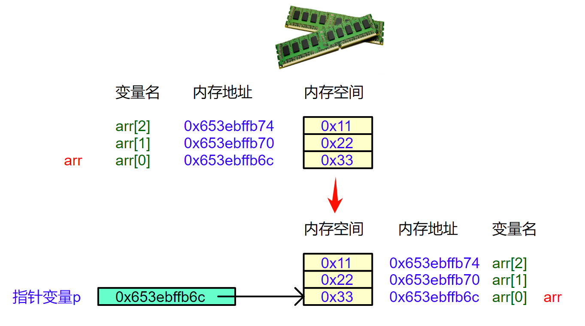</p><p data-lake-id="u4c8fb1be" id="u4c8fb1be"><span data-lake-id="uf0fe2bd3" id="uf0fe2bd3">🍉</span><span data-lake-id="u72578843" id="u72578843">数组名传参，简直太美秒了</span></p><p data-lake-id="ue6b456b8" id="ue6b456b8"><span data-lake-id="udee7aa97" id="udee7aa97">无论多大数组，传参时仅传递指针（8字节），无需复制整个数组；</span></p><hr/><h2 data-lake-id="J1FzJ" id="J1FzJ"><span data-lake-id="ua5360825" id="ua5360825">4.3&gt; 循环遍历版</span></h2><span class="yuque-card-unsupported">[codeblock]</span><hr/><h2 data-lake-id="JTHCL" id="JTHCL"><span data-lake-id="ua8b489e7" id="ua8b489e7">4.4&gt; 增加长度参数</span></h2><p data-lake-id="uee5ce123" id="uee5ce123"><span data-lake-id="ue6d7304e" id="ue6d7304e">🎯</span><span data-lake-id="u771162a6" id="u771162a6">目标：让函数通用化，支持任意长度数组</span></p><span class="yuque-card-unsupported">[codeblock]</span><p data-lake-id="u747da2ec" id="u747da2ec"><br/></p><span class="yuque-card-unsupported">[codeblock]</span><hr/><h2 data-lake-id="kf0XU" id="kf0XU"><span data-lake-id="u34e675a2" id="u34e675a2">🐻</span><strong><span class="lake-fontsize-16" data-lake-id="udfc5bc25" id="udfc5bc25" style="color: #000000">实践练习：</span></strong></h2><p data-lake-id="u1cfee689" id="u1cfee689"><span data-lake-id="uef144914" id="uef144914">练习1&gt; 封装函数 add_arr( ), 将数组中的每个元素加1；</span></p><p data-lake-id="ufdbcbba0" id="ufdbcbba0"><span data-lake-id="ue54039c6" id="ue54039c6">✅</span><span data-lake-id="uf12b041e" id="uf12b041e"> 函数内可直接修改原数组</span></p><span class="yuque-card-unsupported">[codeblock]</span><p data-lake-id="u9b50cca9" id="u9b50cca9"><br/></p><p data-lake-id="u084f490c" id="u084f490c"><span data-lake-id="ub31789fe" id="ub31789fe">练习2&gt; 封装函数，求数组中的最大值；</span></p><span class="yuque-card-unsupported">[codeblock]</span><p data-lake-id="u090ef791" id="u090ef791">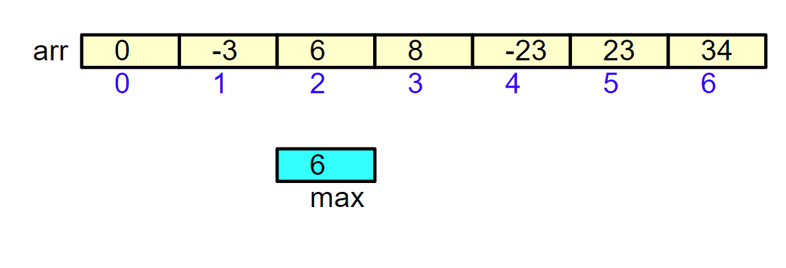</p>